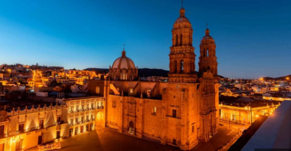

Zacatecas
Zacatecas es un estado ubicado en el norte-centro de México, conocido por su altiplano árido y montañas. Su capital, también llamada Zacatecas, se encuentra a 2,469 metros sobre el nivel del mar, lo que la convierte en una de las ciudades más altas del país